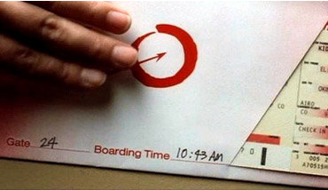

EL SECRETO DE MALDITOS BASTARDOS
Inglorious Basterds es el título original de Malditos Bastardos. La forma correcta de escribirlo en bastards pero, por alguna razón que nunca se conocerá, Tarantino decidió dejarlo así. "Nunca voy a explicar eso. Haces un alarde artístico como ese y explicarlo simplemente acabaría con la idea del principio", aseguró.
LA ESCENA AL REVÉS

La escena de Pulp Fiction en la que John Travolta inyecta adrenalina a Uma Thurman se rodó al revés, de manera que Travolta quitó la aguja, que ya estaba en el pecho de Thurman, y después se rebobinó.
TRAVOLTA SE METE EN EL PAPEL
Un adicto a la heroína ayudó a John Travolta a preparar su papel de Vince en Pulp Fiction. "Si quieres acercarte a lo que se siente, emborráchate con tequila y tumbáte en una piscina caliente", le recomendó. Y eso es lo que hizo el actor, acompañado de su esposa.
UN VERSO BÍBLICO INVENTADO
El icónico pasaje de la Biblia que recita Jules en Pulp Fiction fue inventado por Samuel L. Jackson y Quentin Tarantino. A pesar de tener algunas partes similares a las sagradas escrituras, el texto es ficticio.
LA CARTERA DE PULP FICTION

La icónica cartera de Pulp Fiction en la que se puede leer "Bad Mother Fucker" pertenecía en realidad a Tarantino. La inscripción es una referencia a la canción de la serie de televisión Shaft.
UN PAPEL A MEDIDA PARA SAMUEL L. JACKSON...
Samuel L. Jackson hizo el casting para interpretar al Señor Naranja en Reservoir Dogs y aunque no consiguió el papel, a Tarantino el gustó tanto el actor que escribió el papel de Jules de Pulp Fiction específicamente para él. A partir de ahí, se ha convertido en un habitual en todas sus películas.
...Y OTRO PARA PAM GRIER
Grier hizo la prueba para el papel de Jody en Pulp Fiction, personaje al que finalmente dio vida Rosanna Arquette. Pero Tarantino no olvidó a la actriz y escribió el papel de Jackie Brown para ella.
EL EASTER EGG DE KILL BILL
